항공기관정비기능사 (2015-07-19 기출문제)
1과목: 비행원리
1. 고도 1000m 에서 공기의 밀도가 0.1kgfㆍs2/m4이고 비행기의 속도가 1018 km/h 일 때, 압력을 측정하는 비행기의 피토관 입구에 작용하는 동압은 약 몇 kgf/m2 인가?
- 1557
- 2000
- 2578
- 3998
(정답률: 57%)

2. 무게가 W 인 활공기 또는 기관이 정지된 비행기가 일정한 속도(V)와 활공각 θ 로 활공 비행을 하고 있을 때의 양력(L)방향과 항력(D)방향으로 힘을 옳게 나타낸 것은?
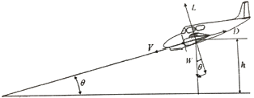
- L = Wsinθ, D = Wcosθ
- L = Wcosθ, D = Wsinθ
- L = Wtanθ, D = Wtanθ
- L = W/cosθ, D = W/sinθ
(정답률: 74%)
3. 비압축성 흐름에서의 형상항력, 압력항력 및 마찰항력의 관계를 옳게 나타낸 것은?
- 형상항력 = 압력항력 + 마찰항력
- 형상항력 = 압력항력 - 마찰항력
- 형상항력 = 마찰항력 - 압력항력
- 형상항력 = (압력항력 + 마찰항력)/2
(정답률: 92%)
4. 대기권에서 전리층이 존재하며 전파를 흡수,반사 하는 작용을 하여 통신에 영향을 끼치는 층은?
- 열권
- 성층권
- 대류권
- 중간권
(정답률: 86%)
5. 항공기의 상승률에 대한 설명으로 옳은 것은?
- 중량이 적을수록 상승률은 감소한다.
- 이용마력이 클수록 상승률은 감소한다.
- 필요마력이 클수록 상승률은 감소한다.
- 프로펠러의 효율이 클수록 상승률은 감소한다.
(정답률: 77%)
6. 프로펠러에서 유효피치를 가장 옳게 설명한 것은?
- 비행기가 최저속도에서 프로펠러가 1초간 전진한 거리
- 비행기가 최고속도에서 프로펠러가 1초간 전진한 거리
- 공기 중에서 프로펠러가 1회전할 때 실제로 전진한 거리
- 공기를 강제로 가정하고 프로펠러를 1회전할 때 이론적으로 전진한 거리
(정답률: 92%)
7. 공기에 압력을 가하면 공기의 체적이 감소되고, 체적에 반비례하는 밀도는 증가되는 성질의 관계식을 무엇이라 하는가?
- 운동 방정식
- 상태 방정식
- 연속 방정식
- 파스칼 방정식
(정답률: 66%)
8. 대형 제트기에서 착륙시 스포일러를 사용하는 가장 큰 이유는?
- 항력을 증가시키기 위하여
- 저항을 감소시키기 위하여
- 바핏(Buffet) 현상을 방지하기 위하여
- 비행기의 착륙 무게를 가볍게 하기 위하여
(정답률: 86%)
9. 항공기의 동안정성 중 세로면에서 진동에 따라 나타나는 현상은?
- 더치롤 - 나선운동
- 단주기 운동 - 롤 운동
- 장주기 운동 - 나선 운동
- 단주기 운동 - 장주기 운동
(정답률: 68%)
10. 다음 중 항공기의 부조종면은?
- 플랩(FLAP)
- 승강키(elevator)
- 방향키(rudder)
- 도움날개(aileron)
(정답률: 92%)
11. 비교적 두꺼운 날개를 사용한 비행기가 천음속영역에서 비행할 때 발생하는 가로 불안정의 특별한 현상은?
- 커플링(Coupling)
- 더치롤(Dutch roll)
- 디프 실속(Deep stall)
- 날개 드롭(Wing drop)
(정답률: 64%)
12. 2개의 주회전 날개를 비행방향에 대하여 앞뒤로 배열시킨 것으로서 대형 헬리콥터에 적합하며, 회전날개의 회전방향은 서로 반대인 헬리콥터는?
- 병렬식 회전날개 헬리콥터
- 직렬식 회전날개 헬리콥터
- 병렬교차식 회전날개 헬리콥터
- 동축역회전식 회전날개 헬리콥터
(정답률: 66%)
13. 날개단면의 받음각이 0°인 경우. 양력계수가 0 이 되지 않는 날개 단면은?
- 무양력 날개단면
- 영양력 날개단면
- 대칭 날개단면
- 비대칭 날개단면
(정답률: 63%)
14. 헬리콥터 비행시 역풍지역이 가장 커지게 되는 비행 상태는?
- 정지비행
- 상승가속비행
- 자동회전비행
- 전진가속비행
(정답률: 69%)
15. 600m 상공에 글라이더가 수평활공거리 6000m 만큼 활공하였다면 이때 양항비는?
- 0.06
- 6
- 10
- 100
(정답률: 92%)
16. 알루미늄 합금의 방식처리방법 중 화학적 피막처리방법으로 가장 옳은 것은?
- 알로다인 처리
- 프라이머
- 알카리 착색법
- 침탄처리
(정답률: 77%)
17. 그림과 같은 항공기 유도 수신호의 의미로 옳은 것은?
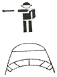
- 도착
- 정면 전진
- 촉 괴기
- 기관 정지
(정답률: 90%)
18. 항공기의 주요 부품 등의 검출이 곤란한 구멍 안쪽의 균열, 시험편 속의 불순물, 도금 두께 등을 검사하는데 가장 많이 사용되는 비파괴 검사 방법은?
- 방사선 검사
- 자분 탐상 검사
- 와전류 검사
- 침투 탐상 검사
(정답률: 50%)
19. 직류 전기회로 측정에 관한 설명으로 옳은 것은?
- 배율기는 전압계와 직렬로 접속시킨다.
- 전류계는 부하 및 전원과 병렬로 접속시킨다.
- 전압측정은 작은 범위에서 시작해서 큰 범위로 높여가면서 측정한다.
- 계기를 회로에 연결할 때에는 단자를 느슨하게 죄어 접속 저항이 최대가 되도록 한다.
(정답률: 54%)
20. 항공기 기체의 개조작업 사항이 아닌 것은?
- 날개형태의 변경
- 중량 및 중심한계 변경
- 기관이나 장비의 기능변경
- 기체 내부 일부 부품의 분해
(정답률: 78%)
2과목: 항공기정비
21. 두께 0.2cm 의 관을 굽힘반지름 24.8cm, 90°로 굽히려고 할 때 세트백(set back)은 몇 cm인가?
- 24.8
- 25.0
- 25.2
- 25.8
(정답률: 80%)
22. 항공기 배관 계통에 알루미늄합금 튜브의 이중 플레어링을 적용하기에 가장 적당한 곳은?
- 튜브 연결 부위의 길이가 짧은 곳
- 배관 계통에 열이 많이 발생하는 곳
- 심한 진동을 받거나 압력이 높은 곳
- 튜브의 꺾어진 곳이 많고 복잡한 곳
(정답률: 79%)
23. 다음과 같은 리벳의 규격에 대한 설명으로 옳은 것은?
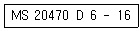
- 접시머리 리벳이다.
- 특수 표면처리 되어 있다.
- 리벳의 지름은 6/16인치이다.
- 리벳의 길이는 16/16인치이다.
(정답률: 56%)
24. 온 컨디션(ON-condition) 정비방식에 대한 설명으로 옳은 것은?
- 부품의 신뢰도가 일정한 품질 수준 이하로 떨어질 때 적정한 대책 조치가 취해진다.
- 고장을 일으키더라도 안전성에 직접 문제가 없는 일반적인 부품에 적용된다.
- 상태의 불량을 판정하기 용이한 기체구조 및 각 계통의 장비품에 적용된다.
- 감항성에 영향을 주는 부품을 분해하여 고장상태를 발견할 수 있다.
(정답률: 49%)
25. 인화성 액체에 의한 화재의 종류는?
- A급 화재
- B급 화재
- C급 화재
- D급 화재
(정답률: 90%)
26. 작업대상물의 모서리를 가공하는데 사용되는 (A)와 같은 공구의 명칭은?
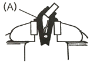
- 평행 클램프
- 앵글
- 샤핑 바이스
- 클램프 바
(정답률: 78%)
27. 다음 중 안전에 관한 색의 설명으로 틀린 것은?
- 노란색은 경고 또는 주의를 의미한다.
- 보호구의 착용을 지시할 때에는 초록과 하양을 사용한다.
- 위험장소를 나타내는 안전표시는 노랑과 검정의 조합으로 한다.
- 금지표지의 바탕은 하양, 기본모형은 빨강을 사용한다.
(정답률: 67%)
28. 밑출친 부분을 의미하는 단어는?
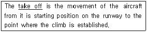
- 이륙
- 착륙
- 순항
- 급하강
(정답률: 86%)
29. 지상에서 객실 여압장치를 갖추고 있는 항공기에 냉ㆍ난방 공기를 공급할 때 항공기의 출입구를 열어 놓거나, Cabin Pressurization Panel의 Outflow Valve를 열어 놓는 이유는?
- 동체파손을 방지하기 위하여
- 객실 잔여 냉ㆍ난방 공기를 배출하기 위해
- 객실 여압 조절 장치의 기능을 점검하기 위해
- 객실 냉ㆍ난방 공기 공급 온도를 맞추기 위해
(정답률: 59%)
30. 유압계통에서 튜브의 크기로 무엇을 표기하는가?
- 튜브의 내경(ID)과 두께
- 튜브의 외경과(OD)과 두께
- 튜브의 내경(ID)과 외경(OD)
- 튜브의 외경(OD)과 피팅의 두께
(정답률: 64%)
31. 주로 구조물에 가해지는 과도한 응력의 집중에 의해 재료에 부분적으로 또는 완전하게 불연속이 생긴 현상을 무엇이라고 하는가?
- 긁힘(Scratch)
- 균열(Crack)
- 좌굴(Buckling)
- 찍힘(Nick)
(정답률: 77%)
32. 다음( )안에 알맞은 것은?
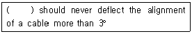
- Fairleads
- Pulley
- Stopper
- Hinge
(정답률: 66%)
33. 토크렌치의 사용방법에 대한 설명으로 틀린 것은?
- 적정 토크범위에 해당하는 토크렌치만 사용한다.
- 사용하던 토크렌치를 다른 토크렌치와 교환해서 사용하지 않는다.
- 정기적으로 교정되는 측정기이므로 사용 시 유효한 것인지 확인한 후 사용한다.
- 사용 중 떨어트리면 외과의 오물만 제거하는 등 최대한 빨리 다시 사용한다.
(정답률: 91%)
34. 다음 중 작업공간이 좁거나 버킹바를 사용할 수 없는 곳에 사용되는 블라인드 리벳(blind rivet)의 종류가 아닌 것은?
- 리브너트
- 체리리벳
- 폭발리벳
- 솔리드섕크리벳
(정답률: 69%)
35. 중력시 연료 보급법과 비교하여 압력식 연료 보급법의 특징으로 틀린 것은?
- 주유시간이 절약된다.
- 연료 오렴 가능성이 적다.
- 항공기 접지가 불필요하다.
- 항공기 표피 손상 가능성이 적다.
(정답률: 88%)
36. 항공용 기관에서 내부에 기계적 기구를 갖지 않고 디퓨져, 밸브망, 연소실 및 분사노즐로 구성된 기관은?
- 램제트 기관
- 펄스제트기관
- 로켓트 기관
- 프롭팬기관
(정답률: 60%)
37. 왕복기관에서 냉각공기의 유량을 조절함으로써 기관의 냉각효과를 조절하는 장치는 무엇인가?
- 카울플랩
- 배플
- 피스톤 링
- 커프
(정답률: 61%)
38. 터보제트기관에서 연료를 1차, 2차 연료로 분류시키는 장치는?
- FCU
- 연료노즐
- P&D 밸브
- 연료히터
(정답률: 74%)
39. 마그네토에서 중립위치와 접촉점(Breaker point)이 열리는 위치 사이의 크랭크축 회전각도를 부르는 명칭은?
- C-GAP
- D-GAP
- E-GAP
- F-GAP
(정답률: 75%)
40. 복식형(Duplex type)의 연료노즐에서 1차와 2차연료의 흐름을 분리하는 것은?
- 연료여과기
- 주연료 펌프
- 연료차단밸브
- 연료흐름분할기
(정답률: 83%)
3과목: 항공기관
41. 기관이 최대출력 또는 그 근처에서 작동 될 때 수동 혼합 조정 장치의 위치는?
- 희박(Lean)위치
- 최대 농후(Full rich)위치
- 외기 온도에 따라 위치 변화
- 외기 습도에 따라 위치 변화
(정답률: 73%)
42. 다음 중 열역학 제2법칙에 대한 설명으로 옳은 것은?
- 온도계의 원리를 규정한 것이다.
- 에너지의 변화량을 규정한 것이다.
- 열은 스스로 저온에서 고온으로 이동할 수 있다는 법칙이다.
- 열과 일의 변환에 일정한 방향이 있다는 것을 설명한 것이다.
(정답률: 64%)
43. 기관의 출력 중 시간제한 없이 작동할 수 있는 최대 출력으로 이륙 추력의 90% 정도에 해당하는 출력의 명칭은?
- 순항 출력
- 최대 상승 출력
- 아이들 출력
- 최대 연속 출력
(정답률: 56%)
44. 18기통 2열 성형기관에서 점화장치를 복식 저압 점화장치로 사용하였다면 장차가되는 변압기는 몇 개 인가?
- 18
- 36
- 54
- 72
(정답률: 85%)
45. 4행정 기관의 밸브개폐 시기가 다음과 같을 때 밸브 오버랩은 몇 도 인가?
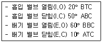
- 30°
- 60°
- 180°
- 240°
(정답률: 67%)
46. 축류형 터빈에서 터빈의 반동도를 옳게 나타낸 것은?
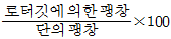
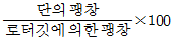
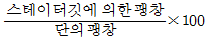
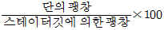
(정답률: 58%)
47. 가스터빈기관은 연소실 내에서 화염이 지연되거나 공기의 흐름속도가 클수록 연소실의 길이가 길어져야 하는데 그 이유로 옳은 것은?
- 연소화염이 터빈까지 들어가지 않게 하기 위해
- 연소가 시작되는 곳에서 연소화염 확산을 빠르게 하기 위해
- 공기와 연료의 혼합을 촉진시켜 신속한 연소가 이루어지게 하기 위해
- 터빈에 작용하는 연소가스 흐름을 균일하게 하기 위해
(정답률: 59%)
48. 결핍시동인 헝스타트(Hung start)에 대한 설명으로 옳은 것은?
- 오일 압력이 늦게 상승 한다.
- 배기가스의 온도가 계속 낮아진다.
- 시동시 EGT 가 규정치 이상 상승한다.
- 시동시 아이들(IDLE) RPM 까지 증가하지 않는다.
(정답률: 65%)
49. 가스터빈기관의 점화장치에서 유도형 점화장치가 아닌 것은?
- 직류 유도형
- 반대직류 유도형
- 교류 유도형
- 교류유도형 반대극성
(정답률: 57%)
50. 다음 중 공기와 연료를 적당한 비율의 혼합가스로 만들어 주는 장치는?
- 과급기
- 매니폴드
- 기화기
- 공기 덕트
(정답률: 57%)
51. 플로트식 기화기에서 스로틀 밸브(Throttle valve)가 설치되는 위치는?
- 벤투리와 초크 밸브 다음에
- 초크 밸브와 연료 노즐 사이에
- 연료 분사 노즐과 벤투리 다음에
- 연료 분사 노즐과 벤투리 사이에
(정답률: 52%)
52. 터빈 입구의 압력이 7, 터빈 출구의 압력이 3, 로터 입구의 압력이 4인 가스 터빈기관에서 축류형 터빈의 반동도는? (단, 공기의 비열비는 1.4이다)
- 20%
- 25%
- 30%
- 35%
(정답률: 62%)
53. 가스터빈기관의 공기흡입도관으로 초음속의 공기가 흡입될 때 도관의 단면적과 공기속도와의 관계를 옳게 설명한 것은?
- 속도는 단면적 감소에 따라 감소하고, 단면적 증가에 따라 증가한다.
- 속도는 단면적 감소에 따라 증가하고, 단면적 증가에 따라 감소한다.
- 속도는 단면적 감소에 따라 감소 후에 증가하고, 단면적의 증가에 따라 감소한다.
- 초음속의 공기가 흡입도관을 흐를 경우 단면적과 공기속도와의 관계가 없다.
(정답률: 62%)
54. 항공기 왕복기관의 실린더 압축시험에서 시험을 할 실린더의 피스톤 위치로 옳은 것은?
- 압축행정 하사점 전
- 압축행정 하사점
- 압축행정 상사점 전
- 압축행정 상사점
(정답률: 53%)
55. 프로펠러 깃 버트(Butt)와 인접한 부분을 말하며 강도를 주기 위해 두껍게 되어 있고 허브 배럴레 꼭 맞게 되어 있는 부분의 명칭은?
- 프로펠러 팁(TIP)
- 프로펠러 허브(HUB)
- 프로펠러 섕크(SHANK)
- 프로펠러 허브 보어(HUB Bore)
(정답률: 57%)
56. 항공용 왕복기관 연료계통의 구성중에서 기관을 시동 할 때 실린더 안에 직접 연료를 분사시켜 주는 장치는?
- 프라이머
- 연료선택밸브
- 주연료펌프
- 비상연료펌프
(정답률: 69%)
57. 가스터빈기관에서 연료-오일냉각기(Fuel-Oil Cooler)의 기능으로 옳은 것은?
- 연료와 오일을 모두 냉각시킨다.
- 오일과 연료를 혼합하여 사용한다.
- 오일을 냉각시키고 연료는 뜨겁게 한다.
- 연료을 냉각시키고 오일는 뜨겁게 한다.
(정답률: 74%)
58. 브레이턴사이클의 열효율을 구하는 식은? (단, : 압력비, : 비열비이다.)
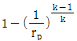
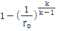
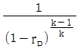
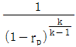
(정답률: 59%)
59. 항공기 왕복기관이 저속, 저출력으로 작동할 때 가장 농후한 혼합비를 사용하는 이유로 옳은 것은?
- 배기가스의 배출이 원활하지 못해 실린더 온도가 높기 때문에
- 배기가스의 배출이 많아 혼합가스의 누설이 되기 때문에
- 실린더 온도 영향으로 연료의 기화가 너무 잘되기 때문에
- 실린더 온도 영향으로 연료의 기화가 잘 안되기 때문에
(정답률: 55%)
60. 가스터빈기관의 추력에 영향을 미치는 요인 중 대기온도와 대기압력에 대한 설명으로 옳은 것은?
- 대기온도가 증가하면 추력은 증가하고,대기압력이 증가하면 추력은 감소한다.
- 대기온도가 증가하면 추력은 감소하고,대기압력이 증가하면 추력은 증가한다.
- 대기온도가 증가하면 추력은 증가하고, 대기압력이 증가하면 추력이 증가한다.
- 대기온도가 증가하면 추력은 감소하고, 대기압력이 증가하면 추력이 감소한다.
(정답률: 56%)
고도 1000m에서의 기압은 다음과 같이 구할 수 있다.
P = P0 * e-Mgh/RT
여기서 P0은 해수면에서의 기압 (1.01325 × 105 Pa), M은 공기의 분자량 (0.02896 kg/mol), g는 중력 가속도 (9.81 m/s2), h는 고도 (1000 m), R은 기체 상수 (8.314 J/(mol·K)), T는 온도 (약 15℃ = 288 K)이다.
P = 1.01325 × 105 * e-0.02896*9.81*1000/(8.314*288) ≈ 89869 Pa
이를 kgf/m2으로 변환하면 다음과 같다.
89869 Pa = 0.89869 N/m2 = 0.0916 kgf/m2
따라서, 정답은 2578이 아니라 2000이다.